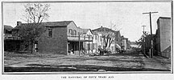
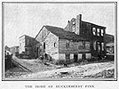
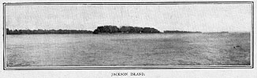
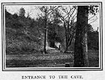
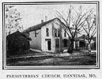
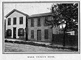

|
THE town of Hannibal, Missouri, has had a number of things to distinguish it during its eighty years of existence: business men are acquainted with it as the one-time centre of the largest lumber trade on the Mississippi River; for lawyers it has furnished some of the most interesting criminal cases on record; the readers of sensational news know it as furnishing many opportunities to the lover of "scare-heads" in journalism; preachers have regarded it for years as a promising field for evangelistic effort; but literary people are interested in it chiefly as the boyhood home of Mark Twain and the scene of his earliest writings. It has changed much since Tom Sawyer's "gang" made things lively for the sleepy little village of St. Petersburg. The town has reached out until it sweeps around Lover's Leap on one side and straggles up Holiday's Hill on the other. Widened, well-paved streets stretch out to the westward, well set with substantial business houses and modern dwellings. Walking along these streets you meet well-dressed women, brisk men, and decorous-looking children; and there is little to remind you of rollicking, incorrigible Tom and angular old-fashioned "Aunt Polly," who thumped his head and loved him with all the ardor of her warm old heart. You say, with a sense of disappointment: "It is not what it was. The place has changed, and the people too." But wait a little. Let us walk out Main Street a few squares. You see that hill rising directly before you, with what seems to be the remains of an old quarry on one side and a few clusters of foliage clinging to the other? It requires a small effort of the imagination to clothe it once more with original forest. Obliterate the modern cottages scattered over it, restore the Welchman's cabin, and you have Holiday's Hill much as it was when Huck and Tom clambered over it on their way to the Haunted House to dig for buried treasure. There to the left is a drug-store. It was a drug-store fifty years ago, with the same name beside the doorway, and the same druggist dispensing pills and powders from behind the same counter. The Hannibal Weekly Journal, owned and edited by Orion Clemens, was printed for a while in the rooms over this drug-store; and here, according to the recent statement of Mr. Samuel Moffett, "the thirteen-year-old boy served in all capacities, and, in the occasional absences of his chief, revelled in personal journalism, with original illustrations hacked on wooden blocks with a jack-knife, to an extent which riveted the town's attention, 'but not its admiration.'"  Turn into one of the cross-streets and look about you. You are in the Hannibal of fifty years ago, picturesque and unpainted externally, cobwebby and deserted internally. Walk a short distance out Hill Street, and you come to the plain little frame house which was the home of the Clemens family during the greater part of their residence in Hannibal. Immediately in the rear of it, on North Street, is a tumble-down shanty which was the home of Thomas Blankenship, better known to the public as Huckleberry Finn.  One surviving member of this family remains--a sister of the illustrious Huck. She seems, however, to be little impressed with the distinction conferred on the family. When questioned as to the identity of her brother with Mark Twain's hero, she said: "Yes, I reckon it was him. Sam and our boys run together considerable them days, and I reckon it was Tom or Ben, one; it don't matter which, for both of 'em's dead." Evidently it was not given to more than one, in those days, to see the possibilities in a character like Huckleberry Finn. "He was nothing more than a plain reprobate," one of the old "boys" declared. "I knew him, and I could never see anything picturesque about him. The principal exploit of his which I now recall is the fact that he once stole a dearly prized kite of mine. He had been regarding it with envious eyes for days, and at last, when he knew I was not at home, he went around and told my mother that I had sent him for the kite. Of course he got it, and that was the last I ever saw of it; but I had my satisfaction"--with a stern, almost ferocious, expression: "I punched his head!" Evidently the memory of that theft still rankles, and renders the judge reluctant to acknowledge the fine points in a character like Huckleberry Finn, considered purely from a literary stand-point. Turning back, you cross Main Street and come to what was once Water Street. You feel yourself miles and miles removed from the busy little city, which is still so close to you that sounds of its cheerful traffic are plainly audible. Not that this is really what it was, but, lying there in its desertion and decay, it is very suggestive of the drowsy, contented life of which Mark Twain wrote: "After all these years I can picture that old time to myself now, just as it was then: the white town drowsing in the sunshine of a summer morning; the streets empty, or pretty nearly so, one or two clerks sitting in front of the Water Street stores, with their splint-bottomed chairs tilted back against the wall, chins on breast, hats slouched over their faces, asleep--with shingle shavings enough around to show what broke them down; a sow and a litter of pigs loafing around the sidewalks, doing a lively business in watermelon rinds and seeds; two or three lonely little freight-piles scattered about the 'levee,' a pile of 'skids' on the slope of the stone-paved wharf, and the fragrant town-drunkard asleep in the shadow of them; two or three wood flats at the head of the wharf, but nobody to listen to the peaceful lapping of the wavelets against them; the great Mississippi, the magnificent Mississippi, rolling its mile-wide tide along, shining in the sun, the dense forest away on the other side; the 'point' above town and the 'point' below town, bounding the river-glimpse and turning it into a sort of sea, and withal a very still, and brilliant, and lonely one."  A short distance below town, lying on this still and shining sea, is a wooded island which has been known by various names--the Jackson's Island on which "The Black Avenger of the Spanish Main" grounded his raft and landed his pirate crew on their first voyage of adventure and conquest. Since then it has been called Pete's Island, in honor of the chief of an older and more formidable band of pirates who had their rendezvous there. It has also been known as Glasscock's Island, and at present is Pearl Island. You are perhaps a traveller, something of a mountain-climber, so you will not mind the walk to the top of Holiday's Hill, from which point we have a view of the river and town, with the wooded shore on the Illinois side. Let Mark Twain describe it for us, as he comes back to it after a number of years, with a vision broadened by travel and experience, and a heart warm with tender memories: "It was a Sunday morning, and everybody was abed yet. So I passed through the vacant streets, still seeing the town as it was and not as it is, and recognizing and metaphorically shaking hands with a hundred familiar objects which no longer exist, and finally climbing Holiday's Hill to get a comprehensive view. The whole town spread out before me then, and I could mark and fix every locality, every detail. Naturally I was a good deal moved. I said, 'Many of the people I once knew in this tranquil refuge of my childhood are now in heaven; some, I trust, are in the other place.' "From this vantage-ground the extensive view up and down the river, and wide over the wooded expanse of Illinois, is very beautiful--one of the most beautiful on the Mississippi, I think; which is a hazardous remark to make, for the eight hundred miles of river between St. Louis and St. Paul afford an unbroken succession of lovely pictures. It may be that my affection for the one in question biases my judgment in its favor; I cannot say as to that. No matter; it was satisfyingly beautiful to me, and it had the advantage over all other friends whom I was about to greet again--it had suffered no change; it was as fresh and comely and gracious as ever it had been; whereas the faces of the others would be scarred by the campaigns of life, and marked with their griefs and defeats, and would give me no upliftings of spirit." Looking north from Holiday's Hill is a picturesque bit of country, the bluffs closing about a narrow gorge, through which flows the stream known in those days as the Still-House Branch. Here, through long lazy afternoons, Huck and Tom played Robin Hood, and here was located the Haunted House where "Injun Joe" found the buried treasure. We may believe this but little changed. A few houses cluster about the opening at the railroad, and as we stop to make some inquiries about localities a barefooted boy with a dilapidated hat two sizes too large for him comes and leans against the fence and regards us with frank, unflattering eyes. Another joins him, and we hear them addressed as "Buck" and "Bill." Seeing no prospect of diversion, they vault over the low board fence and disappear in the bushes which skirt the hill-side. After all, we think, localities may change, but human nature, if let alone, remains about the same. We may build fine houses, and dress and groom, and prune and train, until we succeed in raising up a generation of children looking like fashion plates and acting like little old men and women, but give it half a chance and it springs up into the same rollicking, untamed creature of luxuriant fancy and inexhaustible resources as the two boys who have been the emulation and delight of several generations of children. Perhaps this explains, in some degree, the unfailing interest which still attaches to these early books of Mark Twain. Other writers have given us excellent studies of human nature--of child nature--but the types are imperfect, and so wrought about by peculiarities of style, national characteristics, and a thousand and one things, as to make a critical literary taste necessary to their full appreciation. Not so in this case. Mark Twain has given us not the boy of the Mississippi Valley as he was fifty years ago, but a broad type which finds ready interpreters in every nook and corner of the nation and in every passing generation.  About two miles below town is the cave in which Tom had some of his most thrilling adventures. The opening lies well back in the side of a hill, with a pretty park and athletic ground around it, which are in frequent use for picnics and ball games. Passing inside, you thread the same labyrinth of narrow corridors, with rifts dropping off at your feet as if into the very bowels of the earth. Here is the spring of clear, cold water where Tom and Becky sat down to watch their last bit of candle go out, leaving them in dense and utter darkness. There is the corridor known as "Bat Alley," where myriads of those creatures cling to walls and ceiling, and, disturbed by the light of your torch, beat about your head in a manner far from comfortable. The small stream known as Bear Creek, "so called, perhaps, because it was always so particularly bare of bears," skirts the town on the south side, and notwithstanding his statement that only an expert can find it, a number of present-day boys are intimately acquainted with all the swimming-holes, and Mark Twain's personal experience is frequently repeated: "I used to get drowned in it regularly every summer, and be drained out and inflated and set going again by some chance enemy, but not enough of it is unoccupied now to drown a person in. It was a famous breeder of chills and fever in my day. I remember one summer when everybody in the town had the disease at once. Many chimneys were shaken down, and all the houses so racked that the town had to be rebuilt."  The shabby little brick church where the children of that day attended Sunday-school, and suffered through the eternity of a long Presbyterian sermon, is now used as a court-house. We have it on good authority that the picture of the painfully clean boy standing at the door of this church on Sunday morning, trading licorice, fish-hooks, and marbles for tickets of various colors and values, and through this traffic obtaining the distinction of a prize pupil, notwithstanding the fact that he was never known to recite two verses, not to mention two thousand, is in no respect overdrawn. The boys and girls who attended that school also recall vividly the superintendent, a man named Cross, to whom they affectionately referred as "Cross by name and cross by nature." In searching for boyhood friends and companions of Mark Twain we are reminded of the condition of things in the village of St. Petersburg immediately after the supposed drowning of Tom Sawyer and Joe Harper, when disputes arose as to who saw the dead boys last in life, and those who could establish such claim "took to themselves airs of sacred importance." "One poor chap, who had no other grandeur to offer, said, with tolerably manifest pride in the remembrance, "'Well, Tom Sawyer, he licked me once!'" "But that bid for glory was a failure. Most of the boys could say that much, and so it cheapened the distinction too much." By all odds the most interesting character connected with the history of those years is Mrs. A. L. Frazer, formerly Miss Laura Hawkins, presumably the Becky Thatcher of Tom Sawyer, and the Laura Hawkins of The Gilded Age. A very gentle and winsome lady she is, with wavy gray locks about her face, eyes as sparkling as any girl's, and a charm of manner which marks the genuine woman, no matter what station in life may claim her. Mrs. Frazer enjoys talking about her old play-mate, not because he has grown great and famous, but because he was her old play-mate. Her heart warms to the memory of those halcyon days, and in her regard there mingles no questioning of the world's opinions, no weighing of possible honors. It is one of those tender and unselfish friendships which some very lovable women are capable of inspiring and cherishing through a long lifetime.  "I remember very well when we moved into the house opposite where Mr. John M. Clemens lived," she said. "I remember also the first time I ever saw Mark Twain. He was then a barefooted boy, and he came out in the street before our house and turned hand-springs, and stood on his head, and cut just such capers as he describes in Tom's 'showing off' before Becky. We were good friends from the first. One of our favorite play-places was in the Clemens yard, where we built houses out of a heap of bricks. On one occasion he accidentally tumbled our house down on my hand and made blood blisters on every finger. "On another occasion a crowd of boys and girls went out on the hills of what is now Palmyra Avenue, to spend a Saturday afternoon. The hill-sides were covered with trees and brush, and a favorite sport was to bend down slender saplings and ride, the smaller girls being taken on behind the larger ones. I was having a fine ride behind one of the big girls when she suddenly sprang off, and I was thrown to the ground, striking my head against a stone. I was taken home unconscious, and was very ill for some time, and I remember hearing the children talk about how scared and anxious 'Sam' was." We can but wonder if it was this illness which so wrought on Tom's health and spirits, and if it was his own condition which he so feelingly describes as he tells of the boy hanging around the gate of the school-yard anxiously watching for the coming of Becky: "Presently Jeff Thatcher hove in sight, and Tom's face lighted; but he gazed a moment, then turned sorrowfully away. When Jeff arrived, Tom accosted him and 'led up' warily to opportunities for remark about Becky, but the giddy lad never could see the bait. Tom watched and watched, hoping whenever a whisking frock came in sight, and hating the owner of it whenever he saw she was not the right one. At last frocks ceased to appear, and he dropped down into the dumps; he entered the empty school-house and sat down to suffer. Then one more frock passed in at the gate, and Tom's heart gave a great bound. The next instant he was out and 'going on' like an Indian, yelling, laughing, chasing boys, jumping over fences at the risk of life and limb, throwing hand-springs, standing on his head, doing all the heroic things he could conceive of, and keeping a furtive eye out all the while to see if Becky Thatcher was noticing." If others in the town were unable to see Huck Finn with Mark Twain's eyes, the same difficulty did not obtain in this case, for his little sweetheart seems to have been a universal favorite. One of the old "boys" tells the story of how on one occasion three of the "gang" started out into the great world to seek their fortune, with the understanding that on their return one of the number should marry Laura Hawkins. How the lucky one was to be chosen he fails to relate, but it is safe to say that if the matter had come to settlement after the manner in which boys usually adjust difficulties, Mark Twain would have had at least "a fighting chance." But alas for the brave knights! When they returned the princess was gone! She might have been carried off in their absence by a dreadful ogre, or a rival prince might have spirited her away to his castle, but the unpoetical fact was that her father had moved away, and that was the end of this little romance. On the event of his marriage, Mark Twain enclosed a card to the brother of Mrs. Frazer, and on the inner cover was written: Mrs. ----- (married name unknown to me). (Formerly Miss Laura Hawkins, first sweetheart of one of the within named parties 29 years ago. Pardon the suggestive figures.) On the sloping hill-sides of beautiful Mount Olivet are to be found as many friends and boyhood companions of the great humorist as walk the streets of the busy little city two miles away. Here on the very summit, where a rift in the foliage on intervening hills opens a view of the great, placid, shining river, is the lot with its simple head-stones where the greater part of the Clemens family are sleeping. There is John M. Clemens, the kindly, dignified, if somewhat unfortunate father, about whom one hears only the tenderest and most respectful reminiscences; next to him the mother, from whom her distinguished son is said to have inherited some of the traits which have made him famous; Henry Clemens, the younger brother, who lost his life in a steamboat explosion at Memphis; and last in the row, Orion Clemens, the elder brother, under whose tutelage Samuel Clemens began his literary career. In his recent biographical sketch, Mr. Samuel Moffett says: "Native character will always make itself felt, but one may wonder whether Mark Twain's humor would have developed in quite so sympathetic and buoyant a vein if he had been brought up in Ecclefechan instead of in Hannibal, and whether Carlyle might not have been a little more human if he had spent his boyhood in Hannibal instead of in Ecclefechan." Without claiming an intimate knowledge of the facilities afforded by Ecclefechan for the development of native character, we venture the belief that not Ecclefechan nor any other locality could have furnished better facilities for the untrammelled development of this native genius than it enjoyed in Hannibal. Before all and above all, Mark Twain is a great interpreter of human nature--not the groomed and polished species of the drawing-room, but the unpruned and untrained article which grew up spontaneously in such congenial soil as Hannibal afforded fifty years ago. Call it fatalism or faith, but circumstance, or Providence, usually places within a man's reach just the facilities necessary for the making of his individual character and the accomplishment of his peculiar work. Not all the universities in all the land could have done so much for Mark Twain as did the contact with primitive life and character in this river town, and the later and wider experience of a pilot on the Mississippi River. |